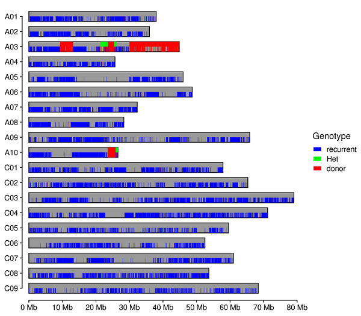

R语言 | 一个计算背景回复率的工具
传统育种工作量大、周期长。通过将回交育种与分子标记辅助选择（Marker-Assisted Selection，MAS）技术相结合，可以将产量、品质和抗性等相关基因或QTLs的优良单倍型快速导入目标材料，从而改良相关性状，显著提高育种效率。在对目标位点进行选择的同时，还需评估改良后材料的背景基因组回复率。传统基于聚丙烯酰胺凝胶电泳的分子标记方法不仅标记数量有限，覆盖范围小，且操作繁琐、效率低。相比之下，利用高通量二代测序技术，能够以较低成本实现对改良材料更高覆盖度、更高精度的背景评价，从而加快育种进程。
选取供体亲本、轮回亲本以及改良株系进行二代测序和变异分析得到一个 vcf 文件，后续如何获得供体基因组片段的位置和长度呢？今天我们介绍的 R 脚本 BackgroundAnalysis.R 可以解决这一问题。
使用方法
工具下载
该脚本可以在 github 上下载，并且有一个 example_data 的子文件夹，里面有演示用的相应数据。另外这个脚本使用 SNPbinner 确定染色体交换的位置，需要预先安装。
1 | |
数据预处理
该脚本并不直接处理 vcf 文件，需要用 GATK 将 vcf 转成 table 格式。
1 | |
数据处理
在这里我们 example_data中的演示数据，其中有三个样本，分别是 recurrent、donor 以及 offspring，分别对应轮回亲本、工体亲本以及改良株系。
有两个参数是可选的。在我使用的油菜参考基因组中包含很多未挂载到染色体上的 scaffold，而我只想展示基因组中的染色体，其次是这个基因组中染色体的命名形如scaffoldA01、scaffoldA02、…，在结果图片中我只想写成A01、A02、…这种格式，因此可以指定 -c/--chromosome参数，接受一个包含两列的制表符分隔文件，第一列代表需要展示的染色体 ID，第二列代表在结果图片中展示出来的染色体名字：
1 | |
第二个可选参数是 -l/--length，同样是包含两列的制表符分隔文件，第一列代表染色体 ID，第二列表示染色体长度，如果不指定此参数默认每个染色体上最后一个 SNP 的位置是染色体长度：
1 | |
运行这个脚本的方式很简单：
1 | |

如上图所示，运行之后我们获得导入片段的分布图，每个染色体下方的竖线表示 SNP 标记的分布，上面矩形表示导入片段的位置，颜色表示基因型。同时会生成两个表格，分别记录导入片段的具体位置以及背景回复率的具体信息。